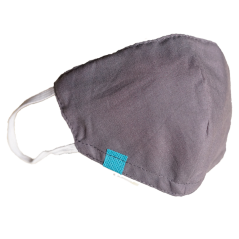

Yuk, Kenali masker yang sebaiknya kita gunakan, rekomendasi dari WHO lho!
Hari, 12 Desember 2222 | 24:00 WIB Penulis : Jati
Nah, di sini, kita mau ngomongin tentang masker nih, yang di Indonesia, wajib dipakai biar ga ketularan. Tapi kalian tau ga, kalau masker itu banyak jenisnya,dan penggunaannya pun berbeda tiap jenisnya.
Buat kalian yang belum atau kurang paham sama jenis-jenis masker, yuk cek di bawah ini.

Masker Kain
Masker kain yang dibuat perlu memiliki 3 (tiga) lapisan yaitu lapisan non-anyaman tahan air (depan), microfibre melt-blown kain non-anyaman (tengah), dan kain biasa non-tenunan (belakang).
Masker kain perlu dicuci dan dapat dipakai berkali-kali. Bahan yang digunakan untuk masker kain berupa bahan kain katun, scarf, dan sebagainya.
Masker jenis ini bisa digunakan ketika berada di tempat umum dan fasilitas lainnya dengan tetap menjaga jarak aman yakni 1-2 meter.
Menurut kamu, mana masker yang paling nyaman?
{% endblock content %}